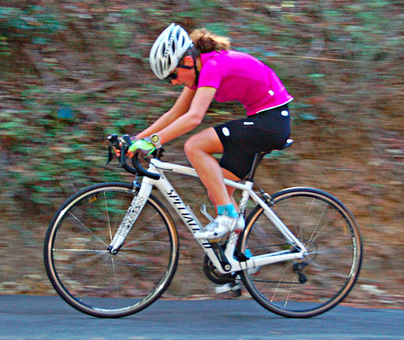

Low-Key Hillclimbs Aggregate Results:
Mountain Charlie
generated Fri Nov 4 10:34:14 PDT 2016
|
|  |
| 2015 week 8: Junior Illi Gardner blitzed the climb to place first in the women and score highest of all riders today. (Rich Hill) |
Results are listed here from the Low-Key archives, sorted by time for each climb. Some years start and/or finish time differ slightly, such as
with Kings Mt Road where after 1995 the start moved from Entrance Way to Greer.
Results are ranked by time first, score second.
Score is calculated using a simple percent-of-median-speed
formula, with time adjustments for division. These scores will generally differ from those calculated in the results for that particular year, since
the scoring scheme has evolved. Tandems are split between 1998, when they were counted as single participants, and other years, when the individual
riders have been counted separately
Results for Men
| rank | time | score | rider | cat | team | year | week | code |
|---|
| 1 | 17:57 | 124.420 | David Collet | 45+ | Stanford & Sons | 2015 | 8 | |
| 2 | 18:02 | 123.845 | Stefano Profumo | 35+ | Squadra SF | 2015 | 8 | |
| 3 | 18:07 | 123.275 | Bill Laddish | 45's | Team CVC | 2015 | 8 | |
| 4 | 18:11 | 122.823 | Zachary Ulissi | 2 | Stanford & Sons | 2015 | 8 | |
| 5 | 18:13 | 122.598 | Morgan Raines | 40+ | Bike Trip/Symantec | 2015 | 8 | |
| 6 | 18:22 | 121.597 | Travis Retzer | 3 | Team CVC | 2015 | 8 | |
| 7 | 18:23 | 121.487 | Joseph Sullivan | 35+ | San Jose Bike Club | 2015 | 8 | |
| 7 | 18:23 | 121.487 | Carl Nielson | 55+ | Sr's & Mr's of No Mercy | 2015 | 8 | |
| 9 | 19:17 | 115.817 | Chris Furgiuele | 35+ | Studio Velo | 2015 | 8 | |
| 10 | 19:27 | 114.824 | Scott Gammon | 6 | Legendary | 2015 | 8 | |
| 11 | 19:34 | 114.140 | Paul Castonguay | 45+ | Low-Key | 2015 | 8 | |
| 11 | 19:34 | 114.140 | Ryan Jones | Catman | Team CVC | 2015 | 8 | |
| 13 | 19:39 | 113.656 | Daniel Connelly | 3 | Low-Key | 2015 | 8 | |
| 14 | 19:47 | 112.890 | Jarno Rajahalme | 45+ | Pen Velo/Pomodoro | 2015 | 8 | |
| 15 | 20:25 | 109.388 | Joe Fant | 55+ | LGBRC | 2015 | 8 | |
| 16 | 20:26 | 109.299 | Nils Tikkanen | Thankful | Bike Trip/Symantec | 2015 | 8 | |
| 17 | 20:48 | 107.372 | Christian Paquet | 55+ | Grumpy Old Men (GOM) | 2015 | 8 | |
| 18 | 21:10 | 105.512 | Jim Perreira | 45+ | San Jose Bike Club | 2015 | 8 | |
| 19 | 21:15 | 105.098 | Paul McKenzie | 60+ | Sr's & Mr's of No Mercy | 2015 | 8 | |
| 20 | 21:18 | 104.851 | Ryan Powell | 35+ | Team Joe Karbowski | 2015 | 8 | |
| 21 | 21:22 | 104.524 | Brian Johnston | 55+ | LGBRC | 2015 | 8 | |
| 22 | 21:25 | 104.280 | Matt Wocasek | 50+ | Team Spokesman | 2015 | 8 | |
| 22 | 21:25 | 104.280 | George Janour | 45+ | Spokesmen | 2015 | 8 | |
| 24 | 21:35 | 103.475 | Bruno Acklin | 55+ | Clagnuts | 2015 | 8 | |
| 25 | 21:36 | 103.395 | Steve Johnson | 50+ | LGBRC | 2015 | 8 | |
| 26 | 22:08 | 100.904 | Chris Mickelsen | 55+ | Pen Velo/Pomodoro | 2015 | 8 | |
| 27 | 22:10 | 100.752 | Scott Martin | 55+ | Team Spokesman | 2015 | 8 | |
| 28 | 22:19 | 100.075 | Benoit Pelczar | Beat Nic > 40 | Santa Cruz Endurance | 2015 | 8 | |
| 29 | 22:20 | 100.000 | Rick Ferrell | 55+ | Team Spokesman | 2015 | 8 | |
| 30 | 22:22 | 99.851 | Andrew Fitzhugh | 50+ | Stanford cycling | 2015 | 8 | |
| 31 | 22:46 | 98.097 | Jeremey Bot | 35+ | Prince of Boston | 2015 | 8 | |
| 32 | 22:50 | 97.810 | Alan Weatherall | 50+ | San Jose Bike Club | 2015 | 8 | |
| 33 | 22:58 | 97.242 | Roupen Nahabedian | 45+ Cat 4 | Pen Velo/Pomodoro | 2015 | 8 | |
| 34 | 23:00 | 97.101 | Doug Reynolds | 60+ | NightRiders | 2015 | 8 | |
| 35 | 23:04 | 96.821 | Jim Williams | 65+ | San Jose Bike Club | 2015 | 8 | |
| 36 | 23:07 | 96.611 | Tony Amadio | 30+ | Clagnuts | 2015 | 8 | |
| 37 | 23:08 | 96.542 | Russell McCrary | 55+ | Sr's & Mr's of No Mercy | 2015 | 8 | |
| 38 | 23:14 | 96.126 | Ramon Periquet | 50+ | Team CVC | 2015 | 8 | |
| 39 | 23:18 | 95.851 | Bill P | 6 | Clagnuts | 2015 | 8 | |
| 40 | 23:53 | 93.510 | Joseph Junio | Havefun | SOLO | 2015 | 8 | |
| 41 | 23:55 | 93.380 | Frank Paysen | 55+ | Chain Reaction | 2015 | 8 | |
| 42 | 24:17 | 91.970 | Thomas Preisler | 60+ | LGBRC | 2015 | 8 | |
| 43 | 24:28 | 91.281 | Scott Violet | 40+ | Google | 2015 | 8 | |
| 44 | 24:29 | 91.219 | Ed Hattler | 55+ | Team Smeal hattler | 2015 | 8 | |
| 45 | 24:30 | 91.156 | Bernardo Tapia | 40+ | | 2015 | 8 | |
| 46 | 24:37 | 90.724 | Larry Klein | 55+ | Grumpy Old Men (GOM) | 2015 | 8 | |
| 47 | 24:55 | 89.632 | Fred Egley | 50+ | Clagnuts | 2015 | 8 | |
| 48 | 25:15 | 88.449 | Robert Doudell | 45+ | LGBRC | 2015 | 8 | |
| 49 | 25:17 | 88.332 | Frank Drobot | 65+ | Team Djament | 2015 | 8 | |
| 50 | 25:45 | 86.731 | Brian Ward | 40+ | Low-Key | 2015 | 8 | |
| 51 | 26:04 | 85.678 | Nicholas Brummell | 50+ And Broken | Atlas | 2015 | 8 | |
| 52 | 26:25 | 84.543 | Martin Hyland | 55+ | Diablo | 2015 | 8 | |
| 53 | 27:12 | 82.108 | Rick Reid | 45+ | Schele Ave Cycling | 2015 | 8 | |
| 54 | 30:02 | 74.362 | Gregory P. Smith | Finisher | Low-Key | 2015 | 8 | |
Results for Women
| rank | time | score | rider | cat | team | year | week | code |
|---|
| 1 | 20:40 | 130.355 | Illi Gardner | Junior | San Jose Bike Club | 2015 | 8 | |
| 2 | 22:49 | 118.072 | Shaena Berlin | 2 | MIT-West | 2015 | 8 | |
| 3 | 22:59 | 117.216 | Sindy Cho | Just Make It To The Top | Low-Key | 2015 | 8 | |
| 4 | 23:10 | 116.288 | Jennie Phillips | 50+ | Sr's & Mr's of No Mercy | 2015 | 8 | |
| 5 | 24:51 | 108.411 | Bonnie Denoyer | 45+ | LGBRC | 2015 | 8 | |
| 6 | 25:14 | 106.764 | Jill Stone | 4 | LGBRC | 2015 | 8 | |
| 7 | 26:05 | 103.285 | Christina King | 45+ | Team CVC | 2015 | 8 | |
| 8 | 27:14 | 98.923 | Crystal Harpstreit | 4 | Dolce Vita/Freewheel | 2015 | 8 | |
| 9 | 28:08 | 95.759 | Mary Anne Cradeur | Just Make It To The Top (Not Familiar With Categories Yet? | I don't have a team | 2015 | 8 | |
| 10 | 28:20 | 95.083 | Maggi Smeal | 55+ | Team Smeal hattler | 2015 | 8 | |
| 11 | 31:48 | 84.717 | Alexis Porubcan | Just Make It To The Top | Sr's & Mr's of No Mercy | 2015 | 8 | |
| 12 | 40:28 | 66.574 | Andrea Ivan | 60+ | Silicon Valley Triathlon | 2015 | 8 | |
Results for Tandem
| rank | time | score | rider | cat | team | year | week | code |
|---|
| 1 | 24:28 | 91.281 | Jonathan Dixon | 35+ | Google | 2015 | 8 | |
| 1 | 24:28 | 91.281 | Emma Dixon | 35+ | Google | 2015 | 8 | |
| 3 | 25:11 | 88.683 | Stuart Taylor | 40+ | Tandem Team Taylor | 2015 | 8 | |
| 3 | 25:11 | 88.683 | Ellen Taylor | Fair Weather Warriors | Tandem Team Taylor | 2015 | 8 | |